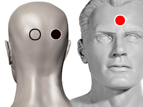

Caspa
Pares
hipotálamo - hipofisis
mastoides - bulbo

Generalidades:
Caspa Pityriasis simplex capilliti. Trastorno del foliculo piloso, o glandula cebacea del cuero cabelludo que causa una descamación acelerada, lo que forma hojuelas o laminillas de piel muerta que se desprenden del cuero cabelludo.
Puede ser causada por múltiples factores como seborrea; exceso de producción de grasa por las glándulas sebáceas, puede ser la rección a un proceso infeccioso.
Causada por psoriasis.
Puede ser causada infecciones por parásitos (piojos), bacterias o por hongos, según el biomagnetismo puede tratarse del micosporum canis. o según otros estudios por Malassezia furfur (Pityrosporum Ovale). Algunos productos como champús anticaspa pueden ser auxiliares en el tratamiento de este trastorno.